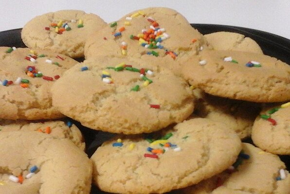

Sugar Cookies Recipe

Description
This is a recipe for sugar cookies.
Ingredients
- 2 3/4 cups AP flour
- 1 teaspoon baking soda
- 1/2 teaspoon salt
- 1 1/4 cups margarine
- 2 cups white sugar
- 2 eggs
- 2 teaspoon vanilla extract
- 1/4 cup white sugar for decoration
Steps
- Preheat the oven to 350degF (175degC). In a medium bowl, stir together the flour, baking soda, and salt; set aside.
- In a large bowl, cream together the margarine and 2 cups sugar until light and fluffy. Beat in the eggs one at a time, then the vanilla. Gradually stir in the dry ingredients until just blended.
- Wrap dough with plastic wrap and chill for 30 minutes to 1 hour.
- Roll the dough into walnut-sized balls and roll the balls in remaining 1/4 cup of sugar. Place cookies 2 inches apart onto ungreased cookie sheets and flatten slightly.
- Bake for 8 to 10 minutes in the preheated oven, until lightly browned at the edges. Allow cookies to cool on baking sheet for 5 minutes before removing to a wire rack to cool completely.